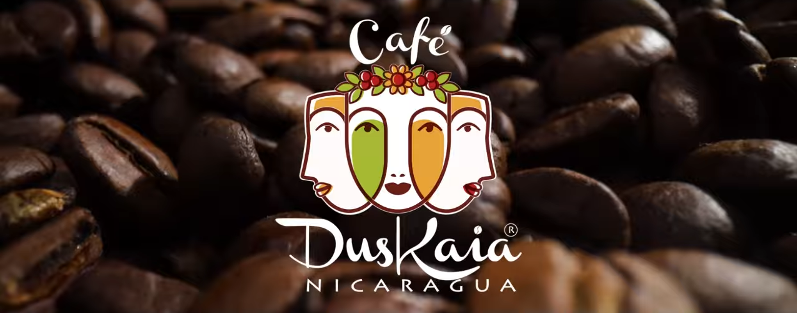

Our Story
Café Duskaia Nicaragua brings authentic Nicaraguan coffee, homemade food, and the warmth of Nicaraguan culture to Philadelphia’s historic Italian Market. Founded by Meyling Moreno, a Nicaraguan coffee farmer, Café Duskaia’s coffee comes from a family cooperative of 45 local producers in the mountainous regions of northern Nicaragua, including Meyling’s eight sisters. The shade-grown Arabica beans are carefully cultivated and processed from seed to cup.
Meyling was raised on her family’s coffee farm in the mountains of northern Nicaragua, where she learned the entire agricultural process from planting and caring for the coffee plants to harvesting and processing the beans alongside a sisterhood of female farmers. Driven by a desire to share her country’s vibrant culture, heritage, and coffee with others, she moved to the United States with the dream of opening her own café.
The Dish: Nicaraguan Coffee from Café Duskaia
Featured on 6abc Philadelphia this segment explores Meyling's journey from her family's coffee farm in Nicaragua to Café Duskaia in Philadelphia's Italian Market.
From Nicaragua to Philadelphia: Meet the Women Coffee Farmers Behind Café Duskaia
Meyling shares the story of Café Duskaia and introduces the women coffee farmers behind the coffee that connects her family's coffee-growing tradition in Nicaragua with Philadelphia.
Café Duskaia Serves Traditional Nicaraguan Food in Philadelphia
Featured on 6abc Philadelphia this segment highlights some of Nicaragua's most popular dishes at Café Duskaia and shows customers experiencing the food at the Philadelphia café.
Meet the Nicaraguan Coffee Farmers Behind Café Duskaia
Travel to Nicaragua and meet some of the coffee farmers behind Café Duskaia, including members of Meyling's family. The video offers a look at the people and coffee-growing traditions behind the coffee served in Philadelphia.